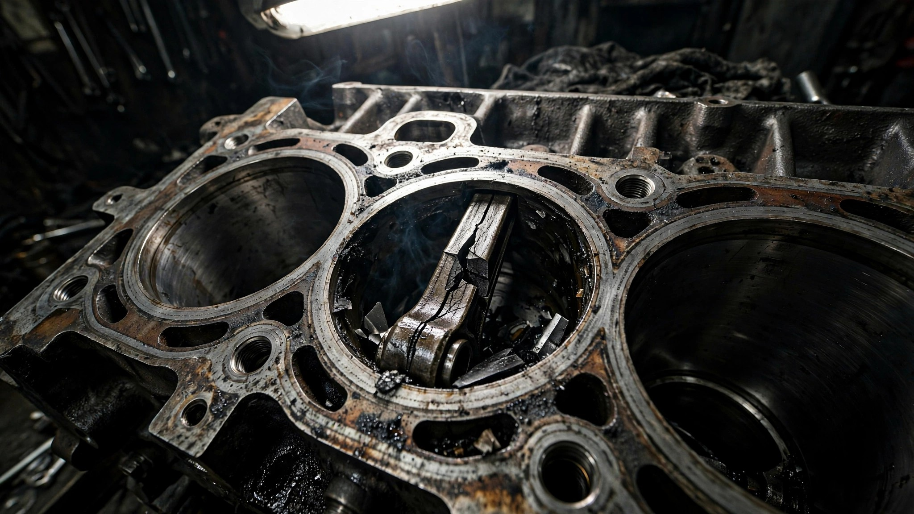

GM’s $4,000 Engine Upgrade Is Seizing at Highway Speed. NHTSA Just Opened Its Highest-Level Investigation.

The L87 6.2-liter V8 is GM’s crown jewel. It’s the engine you pay $4,000 or more to upgrade to in a Silverado, the one that turns a Tahoe into an Escalade-adjacent experience. It’s also, according to 225 complaints filed with NHTSA, seizing without meaningful warning while people are driving it on highways.[1]
NHTSA opened Engineering Analysis EA25-007 in March 2026, which is the agency’s most serious investigation tier before it compels a recall. The agency isn’t looking at the L87 engines in general. It’s looking at L87 engines in vehicles that were specifically excluded from Recall 25V274, GM’s earlier fix for the same engine.[1] Translation: GM already acknowledged the 6.2L had a seizure problem. Recalled some. Said the rest were fine. The rest are not fine.
Covered models span 2019–2021 and 2024 model year Chevrolet Silverado 1500, Suburban, Tahoe, GMC Sierra 1500, Yukon, Yukon XL, Cadillac Escalade, and Escalade ESV. These aren’t fringe vehicles. FARS data from 2014–2023 shows the Silverado, Tahoe, Sierra, Yukon, and Suburban combined for 17,227 fatalities across an estimated fleet of over 10 million vehicles.[2] The Tahoe kills at 2.49 per 100 million VMT. The Yukon at 2.55. These are already among the deadliest SUVs on American roads by rate, and now a subset of them may lose all engine power at 70 mph.
NHTSA’s information request to GM reads like an engine autopsy checklist: connecting rods, crankshafts, lifters, valve springs, pistons, piston rings, rod bearings, main bearings. The agency wants supplier names, manufacturing date ranges, and design differences between suppliers of the same part.[1] That last detail matters. When a federal investigator asks “what changed between suppliers,” they’re not curious. They’re building a case that GM sourced a component from a cheaper or different vendor and something broke.
Complainants describe what engineers call a cascade failure: oil pressure light illuminates, engine noise spikes, motive power vanishes. On a surface street, that’s a tow truck. On an interstate, surrounded by traffic moving at differential speeds, that’s a multi-vehicle incident waiting to happen. And unlike a brake failure, where the driver has seconds of pedal feel change, engine seizure can go from warning light to locked drivetrain in under a mile.
If you own a 2019–2021 or 2024 Silverado, Tahoe, Suburban, Sierra, Yukon, or Escalade with the 6.2L V8: Check your VIN against Recall 25V274 at nhtsa.gov/recalls. If your vehicle is not covered by that recall, you’re in the EA25-007 population. Monitor your oil pressure gauge. If you see a low oil pressure warning, do not drive another eighth of a mile wondering if it will reset. Pull over immediately. A $150 tow is cheaper than what happens when a 6.2-liter V8 locks its crankshaft at highway speed.
Sources & References
- NHTSA, Office of Defects Investigation, Engineering Analysis EA25-007: L87 6.2L V8 Engine Failure, March 10, 2026. static.nhtsa.gov
- NHTSA, Fatality Analysis Reporting System (FARS), 2014–2023. nhtsa.gov
- NHTSA, Recall 25V274. nhtsa.gov/recalls